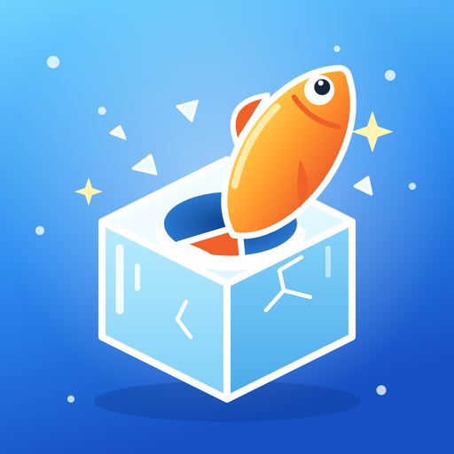

Fish on Ice!Son güncelleme: 19 Ekim 2026
Fish on Ice! (“oyun”), Icenice Games (Melih Yıldırım) tarafından geliştirilen bir mobil oyundur. Bu politika, oyunu oynarken hangi verilerin kim tarafından ve ne için işlendiğini anlatır. Sorularınız için: icefishon@gmail.com.
Hesap açmanızı istemiyoruz. Adınızı, e-posta adresinizi, rehberinizi, fotoğraflarınızı ya da konumunuzu sormuyoruz. Oyun ilerlemeniz (paralar, açılan alanlar, kostümler, ayarlar) yalnızca cihazınızda saklanır ve bize gönderilmez. Kendi sunucumuz yoktur.
Oyun ücretsizdir ve reklam gösterir. Reklamlar Unity LevelPlay reklam aracılık hizmeti ve onunla çalışan reklam ağları üzerinden gösterilir. Bu hizmetler reklam göstermek, reklamın görüntülendiğini ölçmek ve dolandırıcılığı önlemek için şu verileri toplayabilir:
Bu veriler ilgili şirketlerin kendi gizlilik politikalarına göre işlenir: Unity (LevelPlay, ironSource, Unity Ads), Google.
Avrupa Ekonomik Alanı, Birleşik Krallık ve İsviçre'deki oyunculara reklam hizmetleri başlamadan önce oyun içinde izin sorulur. Kişiselleştirilmiş reklama izin vermezseniz kişiselleştirilmemiş reklamlar gösterilir. Tercihinizi istediğiniz zaman oyunda Ayarlar > Kişisel reklamlar ile değiştirebilirsiniz. ABD'deki oyuncular Ayarlar > Verilerimi satma ile reklam ortaklarının verilerini paylaşmasını kapatabilir. Hangi kuralın geçerli olduğunu belirlemek için oyun, telefonun SIM/şebeke ülke kodunu ya da bölge ayarını yalnızca cihaz içinde okur; bu bilgi bize gönderilmez. Reklam kimliğinizi cihazınızın ayarlarından sıfırlayabilir veya silebilirsiniz.
Oyun Google Play üzerinden dağıtılır. Google, çökme raporları gibi teşhis bilgilerini kendi politikasına göre toplayabilir.
Oyun 13 yaşın altındaki çocuklara yönelik değildir. 13 yaşın altındaki çocuklardan bilerek kişisel veri toplamayız. Böyle bir durum fark ederseniz icefishon@gmail.com adresine yazın.
Cihazınızdaki oyun verisini Ayarlar > Kaydı sıfırla ile ya da oyunu kaldırarak silebilirsiniz. Reklam hizmetlerinin tuttuğu veriler için onların politikalarındaki yolları kullanabilir ya da bize yazabilirsiniz; talebinizi ilgili şirkete iletiriz.
6698 sayılı Kişisel Verilerin Korunması Kanunu'nun 11. maddesi uyarınca kişisel verilerinizin işlenip işlenmediğini öğrenme, bilgi isteme, düzeltilmesini ya da silinmesini isteme ve işlemeye itiraz etme haklarınız vardır. Başvurularınızı icefishon@gmail.com adresine gönderebilirsiniz. Reklam hizmetleri kapsamında veriler yurt dışındaki sunuculara aktarılabilir.
Reklam hizmetleriyle yapılan veri aktarımı şifreli bağlantı (HTTPS) üzerinden yapılır.
Bu politikayı güncelleyebiliriz. Güncel metin bu sayfada yayımlanır ve en üstteki tarih değişir.
Last updated: October 19, 2026
Fish on Ice! (“the game”) is a mobile game developed by Icenice Games (Melih Yıldırım). This policy explains which data is processed while you play, by whom and why. Contact: icefishon@gmail.com.
We do not ask you to create an account. We do not ask for your name, email address, contacts, photos or location. Your game progress (money, unlocked areas, costumes, settings) is stored only on your device and is not sent to us. We do not operate our own servers.
The game is free and shows ads. Ads are served through the Unity LevelPlay mediation service and the ad networks it works with. To show ads, measure ad views and prevent fraud, these services may collect:
This data is processed under each company's own privacy policy: Unity (LevelPlay, ironSource, Unity Ads), Google.
Players in the European Economic Area, the United Kingdom and Switzerland are asked for consent in the game before any ad service starts. If you do not consent to personalized ads, you will see non-personalized ads. You can change your choice at any time in the game under Settings > Personalised ads. Players in the United States can stop ad partners from sharing their data under Settings > Do not sell my data. To decide which rules apply, the game reads your phone's SIM/network country code or region setting on the device only; this is not sent to us. You can reset or delete your advertising ID in your device settings.
The game is distributed through Google Play. Google may collect diagnostic information such as crash reports under its own policy.
The game is not directed at children under 13. We do not knowingly collect personal data from children under 13. If you believe this has happened, contact us at icefishon@gmail.com.
You can delete the game data on your device with Settings > Reset progress, or by uninstalling the game. For data held by ad services, use the options in their policies or write to us and we will forward your request.
Depending on where you live (for example under the GDPR or Turkey's KVKK), you may have the right to access, correct or delete your personal data and to object to its processing. Send requests to icefishon@gmail.com. Ad services may transfer data to servers outside your country.
Data sent to ad services travels over encrypted connections (HTTPS).
We may update this policy. The current version is published on this page with a new date at the top.